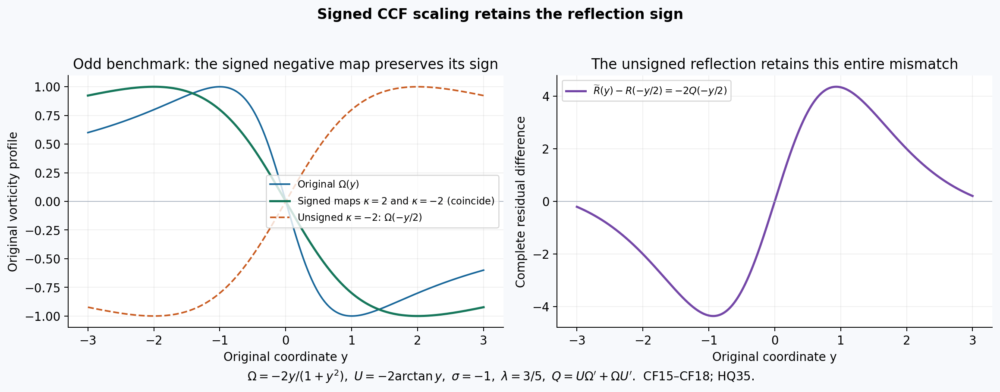
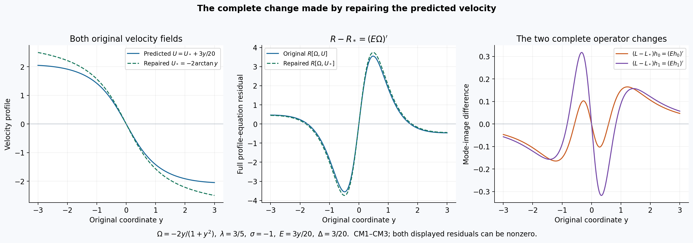
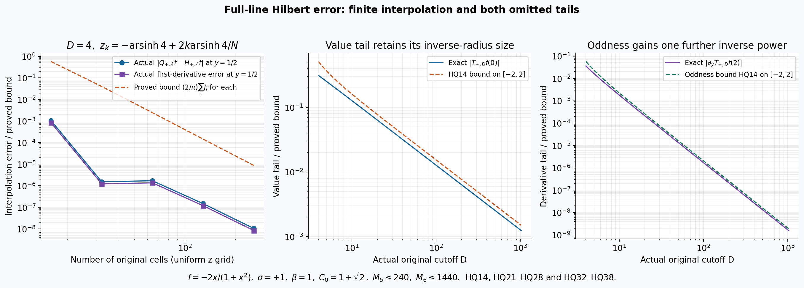
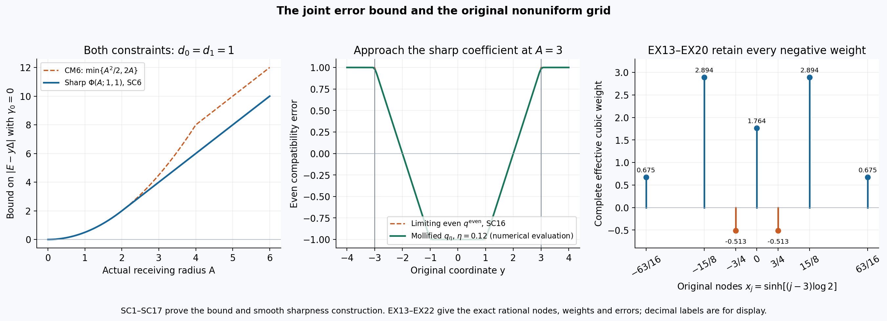

Original CCF modes, Hilbert errors and sharp velocity bounds
The CCF benchmark predicts vorticity and velocity separately. Comparing its approximate profiles with the original equation therefore requires both the equation residual and the error in the Hilbert-transform velocity relation. This lesson proves their complete effect on the two symmetry directions, keeping every original coordinate, sign, anchor and physical-time factor.
The first part derives the actual principal-value and primitive maps, including the signed spatial correspondence. The second gives the full velocity repair, mode-defect bounds and derivative-anchor projection. The third supplies every sinh-coordinate derivative, finite endpoint, whole-line tail and cubic-quadrature error term, together with an exact rational benchmark.
Five solved exercises compute the signed group and anchor maps, both mode defects for a specified velocity, the sharp joint velocity-error coefficient, every weight on an original nonuniform grid and an explicit whole-line transform budget. The final construction keeps the complete global velocity and cutoff transition. Its nonzero equation residual shows exactly what remains after the transform error is controlled.
The human comparison is Wang, Lai, Gómez-Serrano and Buckmaster; each part identifies the original author-source passages. The calculations below prove their stated field maps and bounds. They do not certify an unavailable trained profile, a full stability spectrum or a failure of the main blowup theorem.
Part 1. Original CCF residuals, Hilbert primitives and signed spatial maps
This complete derivation retains both independent profile errors and the
full spatial-scale correspondence. The human source is
Wang, Lai, Gómez-Serrano and Buckmaster,
arXiv:2201.06780v3, original
BoussinesqSupp_v5.tex359–406 and412–486 and
BoussinesqPRL_v5.tex232–252, reread on 2026-10-11. The original equation, anchors, approximate-profile operator and numerical
claims remain identifiable. No trained parameters or numerical quadrature
are inferred, and no novelty or main-theorem failure is asserted.
CF1. A function class and the actual Hilbert primitive
Fix the Hilbert orientation \(\sigma\in\{-1,1\}\) once and retain it in the definition
\[ H_\sigma f(y)=\frac\sigma\pi\operatorname{PV} \int_{\mathbb R}\frac{f(x)}{y-x}\,dx. \tag{CF1} \]All identities below hold for either convention, used consistently. For a real \(\beta>0\), take \(f\in C^3(\mathbb R)\) with specified finite constants \(C_j\) satisfying
\[ |f^{(j)}(x)|\le C_j(1+|x|)^{-\beta-j}, \qquad 0\le j\le3. \tag{CF2} \]This permits every positive power of decay, including the positive exponents stated in the source; it does not assert that an unavailable trained profile satisfies these bounds.
The integral exists. On a fixed compact set of \(y\), the tail integrand is bounded by a constant times \(|x|^{-1-\beta}\). For the local singularity, set \(r=y-x\), subtract \(f(y)\) on the symmetric interval \(|r|<1\), and use the mean value theorem. Precisely,
\[ H_\sigma f(y)=\frac\sigma\pi\left[ \int_{|r|<1}\frac{f(y-r)-f(y)}r\,dr +\int_{|r|\ge1}\frac{f(y-r)}r\,dr\right]. \tag{CF3} \]The removed constant has zero symmetric principal value. The first integrand is bounded by the supremum of \(|f'|\) on the actual unit neighborhood of the compact set. The same argument applies after one or two \(y\)-derivatives, using respectively \(f''\) and \(f'''\). The tails after each derivative have an integrable majorant from CF2. Dominated differentiation therefore proves
\[ H_\sigma f\in C^2(\mathbb R),\qquad (H_\sigma f)'=H_\sigma f',\qquad (H_\sigma f)''=H_\sigma f''. \tag{CF4} \]The function \(x f'(x)\) is locally continuously differentiable and has the same positive tail decay required by CF1. Subtracting \(y H_\sigma f'(y)\) from its principal-value formula cancels the kernel exactly, giving
\[ H_\sigma[xf'](y)-yH_\sigma f'(y) =-\frac\sigma\pi\int_{\mathbb R}f'(x)\,dx=0. \tag{CF5} \]Here \(f'\) is absolutely integrable by CF2, and \(f(+\infty)=f(-\infty)=0\); thus the last integral is zero by the fundamental theorem of calculus. The omitted interval around \(x=y\) tends to zero in this absolutely convergent integral. This justifies the subtraction with the original principal value, not a formal commutator.
Define the exact linear velocity map
\[ V[f](y)=\int_0^y H_\sigma f(r)\,dr. \tag{CF6} \]Integration of CF5 and CF4 gives the full mode map
\[ V[yf'](y)=yH_\sigma f(y)-V[f](y). \tag{CF7} \]The endpoint contribution at zero is \(0\cdot H_\sigma f(0)=0\), since CF3 gives a finite value there. Both integrals in CF6–CF7 are over their actual oriented intervals, also when \(y<0\).
CF2. Retain the independently predicted velocity and its error
Take \(\Omega\) in CF2, \(U\in C^2(\mathbb R)\), \(\lambda\in\mathbb R\), and \(p=1+\lambda\). Do not set the predicted \(U\) equal to \(V[\Omega]\). The complete errors and original evolution residual are
\[ \begin{aligned} \Delta&=U'-H_\sigma\Omega,\\ E&=U-V[\Omega]=U(0)+\int_0^y\Delta(r)\,dr,\\ R&=-\Omega-py\Omega'+U\Omega'+\Omega U'. \end{aligned} \tag{CF8} \]CF4 shows that \(\Delta\) is continuously differentiable. The equality for \(E\) follows by subtracting the two primitives, retaining the original constant \(U(0)\).
The source's displayed linear operator, with its predicted base fields, is
\[ Lh=-h-pyh'+Uh'+V[h]\Omega'+\Omega H_\sigma h+hU'. \tag{CF9} \]For the two specified directions \(h_0=y\Omega'\) and \(h_1=\Omega+py\Omega'\), CF4–CF7 prove
\[ \begin{aligned} H_\sigma h_0&=y(U''-\Delta'),\\ V[h_0]&=yU'-U+E-y\Delta,\\ H_\sigma h_1&=(U'-\Delta)+py(U''-\Delta'),\\ V[h_1]&=pyU'-\lambda U+\lambda E-py\Delta. \end{aligned} \tag{CF10} \]These formulas keep the entire discrepancy of the independently predicted velocity. The source oddness forces \(U(0)=0\) when imposed exactly, but does not force \(\Delta=0\).
Differentiate the full CF8 expression:
\[ R'=-(1+p)\Omega'-py\Omega'' +U\Omega''+2U'\Omega'+\Omega U''. \tag{CF11} \]Substituting CF10 in CF9, without deleting the error terms, gives
\[ Lh_0=yR'+(E-y\Delta)\Omega'-y\Omega\Delta'. \tag{CF12} \]For completeness, the terms in CF9 are
\[ -y\Omega'-py(\Omega'+y\Omega'') +U(\Omega'+y\Omega'') +(yU'-U+E-y\Delta)\Omega' +y\Omega(U''-\Delta')+y\Omega'U'. \]The two \(U\Omega'\) contributions cancel. The remaining terms are exactly CF11 times \(y\), plus the three displayed error contributions in CF12.
Also
\[ L\Omega=R+(U-E)\Omega'+\Omega(U'-\Delta) =2R+h_1-E\Omega'-\Omega\Delta. \tag{CF13} \]The second equality uses only \(U\Omega'+\Omega U'=R+\Omega+py\Omega'=R+h_1\). Linearity and CF12 now give the exact second mode identity
\[ Lh_1-h_1=2R+pyR' +(\lambda E-py\Delta)\Omega' -\Omega(\Delta+py\Delta'). \tag{CF14} \]Thus exact compatible profiles recover the source's zero and one mode identities. For a general prediction, CF12 and CF14 give their entire defects. They do not certify the numerical values or spectrum of an unavailable profile.
CF3. The full signed spatial correspondence
For every actual \(\kappa\ne0\), change variables in CF1. The absolute Jacobian and signed denominator give
\[ H_\sigma[f(\cdot/\kappa)](y) =\operatorname{sgn}(\kappa) (H_\sigma f)(y/\kappa). \tag{CF15} \]For \(\kappa<0\), reversing the integration endpoints contributes the absolute Jacobian \(|\kappa|\), while the denominator contributes \(\kappa\). The deleted symmetric interval of radius \(\epsilon\) in the original variable becomes one of radius \(\epsilon/|\kappa|\); the absolutely convergent tails permit the same change there. This proves CF15 for the original principal value including reflection. CF2 is preserved under every fixed nonzero scale, with finite constants changed by that actual scale. More precisely, for \(0\le j\le3\),
\[ \left|\partial_y^j f(y/\kappa)\right| \le |\kappa|^{-j}C_j \min\{1,|\kappa|^{-1}\}^{-\beta-j} (1+|y|)^{-\beta-j}. \]This follows from the exact derivative factor \(\kappa^{-j}\) and \(1+|y|/|\kappa|\ge \min\{1,|\kappa|^{-1}\}(1+|y|)\). All scale factors are retained.
The exact signed field map is
\[ \Omega_\kappa(y)=\operatorname{sgn}(\kappa)\Omega(y/\kappa), \qquad U_\kappa(y)=\kappa U(y/\kappa). \tag{CF16} \]It satisfies the complete error correspondence
\[ \Delta_\kappa(y)=\Delta(y/\kappa),\qquad E_\kappa(y)=\kappa E(y/\kappa),\qquad R_\kappa(y)=\operatorname{sgn}(\kappa)R(y/\kappa). \tag{CF17} \]To verify these formulas, CF15 gives \(H_\sigma\Omega_\kappa=(H_\sigma\Omega)(y/\kappa)\) and \(U_\kappa'=U'(y/\kappa)\). Their difference proves the first identity. Changing variables in the primitive gives \(V[\Omega_\kappa](y)=\kappa V[\Omega](y/\kappa)\), which proves the second, including its constant at zero. In every term of \(R_\kappa\), the derivative of \(\Omega_\kappa\) is \(\operatorname{sgn}(\kappa)\Omega'(y/\kappa)/\kappa\). The original coordinate \(y\) becomes \(\kappa(y/\kappa)\), and \(U_\kappa\) retains its factor \(\kappa\). All four terms then carry the same sign factor, proving the last identity without changing \(p\) or \(\lambda\).
For comparison, the unsigned vorticity scale printed at supplemental line436 has the Hilbert-compatible velocity factor \(|\kappa|\):
\[ \widetilde\Omega(y)=\Omega(y/\kappa),\qquad \widetilde U(y)=|\kappa|U(y/\kappa),\qquad Q=U\Omega'+\Omega U'. \]Direct substitution keeps the full mismatch
\[ \widetilde R(y)=R(y/\kappa) +(\operatorname{sgn}(\kappa)-1)Q(y/\kappa). \tag{CF18} \]Positive scale has no such term. Negative scale retains \(-2Q\). For \(p>0\), the only continuously differentiable profile for which both \(R=0\) and the unsigned negative-scale residual is zero is \(\Omega=0\). Indeed CF18 forces \(Q=0\), and CF8 then gives \(\Omega+py\Omega'=0\). On \(y>0\), differentiating \(y^{1/p}\Omega(y)\) gives zero. Its constant must be zero because \(\Omega\) is bounded near zero and \(1/p>0\). On \(y<0\), the same argument applies to \(|y|^{1/p}\Omega(y)\). Continuity gives zero at the origin. Thus this joint zero-residual class contains no profile satisfying either nonzero printed point anchor. The signed map CF16 supplies the exact correspondence for all nonzero scales. This is the precise comparison for the printed unrestricted scale, not an inference about which scales were used in the reported tests. For odd \(\Omega,U\), the signed negative-scale pair CF16 equals the pair for \(|\kappa|\) pointwise. In particular a sign flip of the vorticity alone is not that signed symmetry. The two printed values at the point one-half must remain separately recorded; their equality cannot be inferred from the scale claim.
CF4. Receive the two source residuals without deleting quadrature error
At \(y=\sinh z\), write the source's predicted fields as \(\widehat\Omega(z)=\Omega(\sinh z)\) and \(\widehat U(z)=U(\sinh z)\). The exact derivative is \(\partial_y=\operatorname{sech}z\,\partial_z\). Let \(\widetilde H\widehat\Omega(z)\) denote the actual numerical transform used in a supplied calculation, and define its complete error against the pulled-back exact transform by
\[ e_H(z)=\widetilde H\widehat\Omega(z) -(H_\sigma\Omega)(\sinh z). \tag{CF19} \]The source's two residuals at \(a=-1\) then give exactly
\[ \begin{aligned} R(\sinh z)&=-f_1(z),\\ \Delta(\sinh z)&=f_2(z)+e_H(z),\\ E(\sinh z)&=U(0)+\int_0^z \cosh\zeta\,[f_2(\zeta)+e_H(\zeta)]\,d\zeta. \end{aligned} \tag{CF20} \]The first identity follows by keeping all four original equation terms. The second is addition and subtraction of the same numerical transform. The last is CF8 with its exact coordinate Jacobian. No value of \(e_H\), its derivatives or its tail contribution is supplied by these identities. Estimating it for actual data requires the quadrature and tail calculation. The accompanying coordinate and physical-map derivations retain these errors in their quantitative bounds.

The figure evaluates CF15–CF18 for the explicit benchmark \(\Omega(y)=-2y/(1+y^2)\), \(U(y)=-2\arctan y\), \(\sigma=-1\) and \(\lambda=3/5\), on the original interval \([-3,3]\). HQ35 proves its Hilbert compatibility. Both signed scales \(2\) and \(-2\) give the same odd pair; the unsigned negative scale retains exactly the plotted \(-2Q(-y/2)\). These curves evaluate the proved field map on a specified benchmark, not the trained profile reported by Wang, Lai, Gómez-Serrano and Buckmaster at supplemental436–480. The reproducible source is ccf-hilbert-comparisons.py.
Part 2. Original CCF velocity repair, physical time and complete mode-error bounds
This calculation receives the exact objects and function class in
CF1–CF20.
The human comparison is Wang, Lai, Gómez-Serrano and Buckmaster,
arXiv:2201.06780v3, original
BoussinesqSupp_v5.tex359–389 and454–480. The source predicts velocity
and vorticity independently and states two symmetry directions for the
linearized equation. Both residuals are retained below.
CM1. The exact repair of the predicted velocity and its linear operator
Retain \(p=1+\lambda\), \(V[\Omega]=\int_0^yH_\sigma\Omega\), \(\Delta=U'-H_\sigma\Omega\) and \(E=U-V[\Omega]\), with the function class of CF1–CF9. The map on the actual pair of fields is
\[ \mathcal P:(\Omega,U)\longmapsto(\Omega,U_*),\qquad U_*=V[\Omega]=U-E. \tag{CM1} \]It is a linear retraction onto the pairs satisfying \(U(0)=0\) and \(U'=H_\sigma\Omega\): its image has both properties by the fundamental theorem of calculus, and those properties give \(U=V[\Omega]\) by integration, so it fixes every such pair. Consequently \(\mathcal P^2=\mathcal P\). Its kernel consists exactly of the pairs \((0,U)\). This describes the complete change of object, including the removed velocity constant.
Let \(R_*\) be the full original CCF residual computed with \(U_*\), and let \(L_*\) be the source operator CF9 computed with the same repaired base. Direct subtraction gives
\[ \begin{aligned} R_*&=R-E\Omega'-\Omega\Delta =R-(E\Omega)',\\ (L-L_*)h&=Eh'+\Delta h=(Eh)'. \end{aligned} \tag{CM2} \]The identities use \(E'=\Delta\), proved in CF8. The perturbation velocity \(V[h]\) is the same in both operators; it is not dropped. Thus a velocity repair changes the residual and the linearized operator by the precise displayed derivatives. These are equalities of actual functions on their original domains, not an identification of two different predictions.
For \(h_0=y\Omega'\), CF12 and CM2 give
\[ Lh_0=yR_*'+(Eh_0)' =yR'+(E-y\Delta)\Omega'-y\Omega\Delta'. \tag{CM3} \]Expanding \((E\Omega)''=E\Omega''+2\Delta\Omega' +\Omega\Delta'\) verifies all terms. Solving the repaired profile equation means proving \(R_*=0\). The velocity retraction itself gives the exact value \(R_*=R-(E\Omega)'\), which can be nonzero. CM2 supplies the full comparison.
CM2. Stronger finite-interval bounds with the exact integral cancellation
On an actual \([-A,A]\), \(A>0\), define
\[ \begin{aligned} r_0&=\|R\|_\infty,&r_1&=\|R'\|_\infty,\\ d_0&=\|\Delta\|_\infty,&d_1&=\|\Delta'\|_\infty,\\ M_0&=\|\Omega\|_\infty,&M_1&=\|\Omega'\|_\infty, &\gamma_0&=U(0). \end{aligned} \tag{CM4} \]All these numbers are finite by the stated local regularity. They may also be replaced by independently proved upper bounds for the same functions. Integration by parts, keeping both endpoints, gives
\[ E(y)-y\Delta(y) =\gamma_0+\int_0^y\Delta(r)\,dr-y\Delta(y) =\gamma_0-\int_0^y r\Delta'(r)\,dr. \tag{CM5} \]For negative \(y\), the integral is oriented from zero to \(y\); its absolute bound is still \(|y|^2d_1/2\). A second bound follows by estimating the two original \(\Delta\) terms separately. Thus, with every contribution retained,
\[ |E(y)-y\Delta(y)| \le |\gamma_0|+\min\{2|y|d_0,\tfrac12|y|^2d_1\},\qquad K_A=|\gamma_0|+\min\{2A d_0,\tfrac12 A^2d_1\}. \tag{CM6} \]The coefficient one-half is the exact integral \(\int_0^{|y|}r\,dr\). No smallness of \(d_0\) or \(d_1\) was assumed to obtain it.
Write the original mode defects as \(D_0=Lh_0\) and \(D_1=Lh_1-h_1\), where \(h_1=\Omega+py\Omega'\). CF12 immediately gives
\[ \|D_0\|_\infty\le A r_1+K_A M_1+A M_0d_1. \tag{CM7} \]For the second defect retain the exact identity
\[ \lambda E-py\Delta =\lambda(E-y\Delta)-y\Delta, \tag{CM8} \]because \(p=1+\lambda\). Substitution in CF14 proves
\[ \|D_1\|_\infty \le2r_0+|p|A r_1+(|\lambda|K_A+A d_0)M_1 +M_0(d_0+|p|A d_1). \tag{CM9} \]These bounds apply to the exact source operator with independently predicted velocity. In the compatible class, \(\gamma_0=0\) and \(\Delta=0\), so they reduce exactly to \(A r_1\) and \(2r_0+|p|A r_1\). A small residual value alone does not supply the missing derivative or compatibility bounds.
To receive the actual numerical residuals at \(y=\sinh z\), use CF19–CF20. If their suprema and original-coordinate derivative suprema on \(|z|\le\operatorname{arsinh}A\) are bounded by
\[ \begin{aligned} |f_1|&\le a_0,&|\operatorname{sech}z\,\partial_zf_1|&\le a_1,\\ |f_2|&\le b_0,&|\operatorname{sech}z\,\partial_zf_2|&\le b_1,\\ |e_H|&\le e_0,&|\operatorname{sech}z\,\partial_ze_H|&\le e_1, \end{aligned} \tag{CM10} \]then exactly \(r_j\le a_j\) and \(d_j\le b_j+e_j\) for \(j=0,1\). These follow by the triangle inequality from CF20 and its derivative. The quadrature and tail derivation supplies explicit ways to bound \(e_0,e_1\); their values are not inferred from a source figure. Applying CM6–CM9 to these six actual bounds completes their receiving map.
CM3. Full physical time, velocity compatibility and evolution residual
Retain the source's original physical variables
\[ \tau=1-t>0,\qquad y=x/\tau^p,\qquad \omega(t,x)=\tau^{-1}\Omega(y),\qquad u(t,x)=\tau^\lambda U(y). \tag{CM11} \]The spatial dilation \(\tau^p\) is positive for every real \(p\). CF15 therefore gives the entire physical Hilbert map. Differentiation and change of variables in the primitive yield
\[ \begin{aligned} H_\sigma\omega(t,x)&=\tau^{-1}(H_\sigma\Omega)(y),\\ u_x-H_\sigma\omega&=\tau^{-1}\Delta(y),\\ u(t,x)-\int_0^xH_\sigma\omega(t,r)\,dr&=\tau^\lambda E(y),\\ u(t,0)&=\tau^\lambda\gamma_0. \end{aligned} \tag{CM12} \]For example, the primitive factor is \(\tau^{-1}\tau^p=\tau^\lambda\), with its original lower endpoint unchanged.
The complete physical CCF equation has \(a=-1\). Its error is
\[ \begin{aligned} \omega_t&=\tau^{-2}[\Omega+py\Omega'],\\ u\omega_x&=\tau^{\lambda-1-p}U\Omega' =\tau^{-2}U\Omega',\\ \omega u_x&=\tau^{-2}\Omega U',\\ \omega_t-u\omega_x-\omega u_x&=-\tau^{-2}R(y). \end{aligned} \tag{CM13} \]At every available spatial derivative order \(j\), the complete derivative factors are
\[ \begin{aligned} \partial_x^j\omega&=\tau^{-1-jp}\Omega^{(j)}(y),\\ \partial_x^ju&=\tau^{\lambda-jp}U^{(j)}(y),\\ \partial_x^j[\omega_t-u\omega_x-\omega u_x] &=-\tau^{-2-jp}R^{(j)}(y),\\ \partial_x^j[u_x-H_\sigma\omega] &=\tau^{-1-jp}\Delta^{(j)}(y). \end{aligned} \tag{CM14} \]The interval \(|y|\le A\) is the actual moving physical interval \(|x|\le\tau^p A\). Its error bounds keep the factors in CM12–CM14, even when they grow as \(t\uparrow1\).
For a time-dependent profile \(\Omega(s,y)\), with \(s=-\log\tau\), the same calculation instead gives
\[ \omega_t-u\omega_x-\omega u_x =\tau^{-2}(\partial_s\Omega-R[\Omega,U]). \tag{CM15} \]The additional term is from \(\partial_ts=\tau^{-1}\). Consequently the exact compatible rescaled evolution is \(\partial_s\Omega=R[\Omega,V[\Omega]]\). Its derivative in a direction \(h\) is \(L_*h\), since expansion of both quadratic terms gives all six terms of CF9 with the repaired base.
CM4. The actual symmetry directions and the source anchors
For positive spatial scale \(\kappa=e^\epsilon\), CF16 gives
\[ \left.\partial_\epsilon\Omega(y/e^\epsilon)\right|_0=-h_0, \qquad \left.\partial_\epsilon[e^\epsilon U(y/e^\epsilon)]\right|_0 =U-yU'. \tag{CM16} \]For an exact compatible base, the second expression equals \(-V[h_0]\) by CF10. The direction is constant in the rescaled time, which yields the source's zero mode when the full equation residual is zero.
Changing the original terminal time from one to \(1+\epsilon\) gives the physical family
\[ \omega_\epsilon(t,x)=\frac1{\tau+\epsilon} \Omega\left(\frac{x}{(\tau+\epsilon)^p}\right), \quad u_\epsilon(t,x)=(\tau+\epsilon)^\lambda U\left(\frac{x}{(\tau+\epsilon)^p}\right). \tag{CM17} \]For \(|\epsilon|<\tau\), differentiating the full factors at zero gives
\[ \left.\partial_\epsilon\omega_\epsilon\right|_0 =-\tau^{-2}(\Omega+py\Omega')=-\tau^{-2}h_1, \qquad \left.\partial_\epsilon u_\epsilon\right|_0 =\tau^{\lambda-1}(\lambda U-pyU'). \tag{CM18} \]In the original rescaled variables, the profile direction is \(-\tau^{-1}h_1=-e^s h_1\). The compatible velocity direction is \(-e^s V[h_1]\), by CF10 with \(E=\Delta=0\). This supplies the source's eigenvalue one with its full physical time factor. For arbitrary predicted fields, CF12 and CF14 give the exact departures from those identities.
The equation symmetries also act on the source conditions. For the original derivative anchor \(b=\Omega'(0)=-2\),
\[ h_0'(0)=b,\qquad h_1'(0)=(1+p)b=(2+\lambda)b. \tag{CM19} \]Neither direction is tangent to that fixed derivative condition at the source's positive exponents. This does not erase the equation symmetry; it identifies the different tangent space selected by the condition. For the printed point anchor at \(a=1/2\), the two variations are
\[ h_0(a)=a\Omega'(a),\qquad h_1(a)=\Omega(a)+pa\Omega'(a). \tag{CM20} \]The two printed base values \(+0.05\) and \(-0.05\) remain different source conditions. These variations determine how each one changes under the actual field maps, without choosing which value was used in an unavailable computation.
There is an exact linear map to the derivative-anchor tangent space. On the vector space \(C^1(\mathbb R)\) of real perturbations define \(\ell(h)=h'(0)\). Because \(\ell(h_0)=b\ne0\), put
\[ P_bh=h-\frac{\ell(h)}b h_0. \tag{CM21} \]Then \(\ell(P_bh)=0\), \(P_b^2=P_b\), its image is \(\ker\ell\), and its kernel is \(\operatorname{span}\{h_0\}\). Each assertion follows by applying \(\ell\) to the two terms and using \(\ell(h_0)=b\). This explicitly relates the original equation directions to the constrained tangent space.
In particular,
\[ h_*=P_bh_1=h_1-(1+p)h_0=\Omega-y\Omega',\qquad P_bLh_*-h_*=P_b[D_1-(1+p)D_0]. \tag{CM22} \]For the second equality use \(Lh_1=h_1+D_1\), \(Lh_0=D_0\), and \(P_bh_1=h_*\). Thus the same exact defects propagate into the projected linear map. For a compatible zero-residual base the right side vanishes, so the time-translation direction has eigenvalue one in this projected map. No nonlinear constrained flow or complete spectral domain is asserted by this linear correspondence alone.
Every application of \(P_b\) in CM22 is defined under the stated regularity. Indeed \(h_0,h_1\in C^2\), and CF4–CF5 show \(H_\sigma h_0,H_\sigma h_1\in C^1\). Formula CF9 then gives \(Lh_0,Lh_1\in C^1\), because \(U\in C^2\) and \(\Omega\in C^3\). This also proves that the full defects \(D_0,D_1\) are \(C^1\), even though individual terms in their expanded expressions need not have separately available derivatives of the next order. The projection is applied to the complete functions.
Finally \(h_*\ne0\) in this anchored decay class. If \(\Omega-y\Omega'=0\), differentiation gives \((\Omega/y)'=0\) on each open half-line. Thus \(\Omega=c_+y\) for positive \(y\) and \(\Omega=c_-y\) for negative \(y\). The decay in CF2 forces both constants to be zero, contradicting \(\Omega'(0)=-2\). This proves that the projected exact direction is nonzero while leaving the original function class and anchor intact.

The figure evaluates CM1–CM3 on the original interval \([-3,3]\), using \(\Omega=-2y/(1+y^2)\), \(\sigma=-1\), \(\lambda=3/5\), \(U_*=-2\arctan y\), and \(U=U_*+3y/20\). Hence \(E=3y/20\) and \(\Delta=3/20\) exactly. All four terms of each residual and the complete derivatives \((Eh_0)'\), \((Eh_1)'\) are evaluated. The repaired residual is generally nonzero. This specified benchmark illustrates the precise comparison with the independently predicted fields in Wang, Lai, Gómez-Serrano and Buckmaster, supplemental377–389 and454–480; it is not their trained profile. The reproducible source is ccf-hilbert-comparisons.py.
Part 3. Original Hilbert coordinates, endpoint terms, tails and cubic quadrature
This derivation supplies explicit transform-error bounds for
CF19–CF20 and
CM6–CM10.
The human comparison is Wang, Lai, Gómez-Serrano and Buckmaster,
arXiv:2201.06780v3, original
BoussinesqSupp_v5.tex381–400 and436–444. The source describes cubic
interpolation in a numerical Hilbert transform on a large sinh-coordinate
domain, but does not supply its stencils or trained evaluation data in
these passages. The finite quadrature below specifies every stencil,
weight, error term and original coordinate. No numerical source result
is certified by it.
HQ1. The complete pulled-back kernel and every original derivative
Use \(H_\sigma\) from CF1, with one fixed \(\sigma\in\{-1,1\}\). Let \(f\) satisfy CF2, and write \(\widehat f(z)=f(\sinh z)\). For an actual truncation radius \(D>0\), put \(Z_D=\operatorname{arsinh}D\). At \(y=\sinh z\) with \(|y|<D\), the truncated operator is
\[ H_{\sigma,D}f(y)=\frac\sigma\pi\operatorname{PV} \int_{-D}^{D}\frac{f(x)}{y-x}\,dx. \tag{HQ1} \]Changing the integration variable by \(x=\sinh\zeta\) gives the exact coordinate expression
\[ H_{\sigma,D}f(\sinh z)=\frac\sigma\pi\lim_{\epsilon\downarrow0} \left(\int_{-Z_D}^{\operatorname{arsinh}(\sinh z-\epsilon)} +\int_{\operatorname{arsinh}(\sinh z+\epsilon)}^{Z_D}\right) \frac{\widehat f(\zeta)\cosh\zeta}{\sinh z-\sinh\zeta}\,d\zeta. \tag{HQ2} \]The numerator Jacobian, denominator, both finite endpoints and both excluded endpoints remain explicit. The same formula with infinite endpoints gives the full operator, because CF2 makes its original tails absolutely convergent.
For completeness, a symmetric principal value in \(\zeta-z\) has the same limit. Taylor expansion at \(\zeta=z\) shows that the integrand in HQ2 equals \(-\widehat f(z)/(\zeta-z)\) plus a locally bounded function. The two excluded lengths in HQ2, divided by \(\epsilon\), both tend to \(1/\cosh z\), by the derivative of arcsinh. The unmatched singular integrals therefore differ by a constant times the logarithm of a ratio tending to one; the bounded remainder over those intervals tends to zero. This proves the equality of the two limits while retaining the exact cutoffs in HQ2.
Set \(a(z)=\operatorname{sech}z\) and \(t(z)=\tanh z\). The original derivative is \(\partial_y=a\partial_z\), and its first three powers are
\[ \begin{aligned} \partial_y f&=a\widehat f',\\ \partial_y^2 f&=a^2(\widehat f''-t\widehat f'),\\ \partial_y^3 f&=a^3[\widehat f'''-3t\widehat f'' +(3t^2-1)\widehat f']. \end{aligned} \tag{HQ3} \]The primes on the right are \(z\)-derivatives. All orders have a complete finite recurrence:
\[ \begin{aligned} \partial_y^j f(\sinh z)&=a(z)^j \sum_{k=0}^jP_{j,k}(t(z))\widehat f^{(k)}(z),\\ P_{0,0}&=1,\\ P_{j+1,k}(t)&=(1-t^2)P_{j,k}'(t)-jtP_{j,k}(t)+P_{j,k-1}(t). \end{aligned} \tag{HQ4} \]An index outside \(0\le k\le j\) denotes zero. To prove the recurrence, use \(a'=-at\), \(t'=1-t^2\), and apply the product rule to the entire first line. The last term differentiates the original \(\widehat f^{(k-1)}\); the other two retain the derivative of the coefficient and of \(a^j\). This induction proves every order with every multiplier present.
For supplied bounds \(|\widehat f^{(k)}|\le Q_k\) on \([-Z_D,Z_D]\), put \(T_D=D/\sqrt{1+D^2}\). Writing \(P_{j,k}(t)=\sum_r p_{j,k,r}t^r\) gives the explicit original-coordinate upper bound
\[ \sup_{|y|\le D}|f^{(j)}(y)| \le\sum_{k=0}^j\sum_{r\ge0}|p_{j,k,r}|T_D^rQ_k. \tag{HQ5} \]This follows from HQ4, \(|t|\le T_D\) and \(0<a\le1\). For the source's finite tanh networks, all \(Q_k\) can be calculated from their actual parameters by BN2–BN4, applied to their actual input \(z\). HQ4 supplies the additional original-coordinate factors. Such local parameter bounds do not supply a global tail bound.
HQ2. The finite boundary contribution survives differentiation
Define the full omitted tail at \(|y|<D\):
\[ T_{\sigma,D}f(y)=\frac\sigma\pi\int_{|x|>D} \frac{f(x)}{y-x}\,dx, \qquad H_\sigma f=H_{\sigma,D}f+T_{\sigma,D}f. \tag{HQ6} \]The tail and all its \(y\)-derivatives exist on compact subsets of this open interval, since the denominator is bounded away from zero and the original tail is integrable. In particular
\[ (T_{\sigma,D}f)'(y) =-\frac\sigma\pi\int_{|x|>D}\frac{f(x)}{(y-x)^2}\,dx. \tag{HQ7} \]Integrating the two tails of \(H_\sigma f'\) by parts separately retains the endpoints at \(-D,D\). The infinite endpoints vanish by CF2. This gives
\[ T_{\sigma,D}f' =(T_{\sigma,D}f)' +\frac\sigma\pi\left[\frac{f(D)}{D-y} +\frac{f(-D)}{D+y}\right]. \tag{HQ8} \]Using \((H_\sigma f)'=H_\sigma f'\), proved in CF4, and subtracting HQ8 from the whole-line identity proves
\[ (H_{\sigma,D}f)'=H_{\sigma,D}f' +\frac\sigma\pi\left[\frac{f(D)}{D-y} +\frac{f(-D)}{D+y}\right]. \tag{HQ9} \]Thus the truncated operator does not commute with differentiation without these two endpoint terms.
At every higher order \(j\) for which the corresponding smooth decay hypotheses hold, induction in HQ9 gives the complete formula
\[ \begin{aligned} \partial_y^jH_{\sigma,D}f ={}&H_{\sigma,D}f^{(j)}\\ &+\frac\sigma\pi\sum_{\ell=0}^{j-1}(j-1-\ell)! \left[\frac{f^{(\ell)}(D)}{(D-y)^{j-\ell}} +\frac{(-1)^{j-1-\ell}f^{(\ell)}(-D)}{(D+y)^{j-\ell}} \right]. \end{aligned} \tag{HQ10} \]Differentiating an existing endpoint term raises its denominator power with its exact factorial and sign. Differentiating the first term adds the new pair with \(\ell=j\). This proves the recurrence and every boundary contribution in HQ10.
HQ3. Full tail bounds and the improvement supplied by oddness
Fix an actual receiving interval \([-A,A]\), with \(0<A<D\), and a verified tail bound \(|f(x)|\le C_0(1+|x|)^{-\beta}\), \(\beta>0\). For every \(j\ge0\), direct differentiation of HQ6 gives
\[ \partial_y^jT_{\sigma,D}f(y) =\frac{\sigma(-1)^jj!}{\pi} \int_{|x|>D}\frac{f(x)}{(y-x)^{j+1}}\,dx. \tag{HQ11} \]For \(|x|\ge D\) and \(|y|\le A\), \(|y-x|\ge(1-A/D)|x|\). The complete bound, before and after evaluating an elementary upper integral, is
\[ \begin{aligned} \|\partial_y^jT_{\sigma,D}f\|_{L^\infty([-A,A])} &\le\frac{2C_0j!}{\pi(1-A/D)^{j+1}} \int_D^\infty(1+x)^{-\beta}x^{-j-1}\,dx\\ &\le\frac{2C_0j!}{\pi(1-A/D)^{j+1}(\beta+j)}D^{-\beta-j}. \end{aligned} \tag{HQ12} \]The second inequality uses \((1+x)^{-\beta}\le x^{-\beta}\) only after retaining the actual tail integral in the first line.
For odd \(f\), pair the two original tails exactly:
\[ \begin{aligned} T_{\sigma,D}f(y) &=\frac\sigma\pi\int_D^\infty f(x) \left[\frac1{y-x}-\frac1{y+x}\right]dx\\ &=-\frac{2\sigma}{\pi}\int_D^\infty \frac{x f(x)}{x^2-y^2}\,dx,\\ (T_{\sigma,D}f)'(y) &=-\frac{4\sigma y}{\pi}\int_D^\infty \frac{x f(x)}{(x^2-y^2)^2}\,dx. \end{aligned} \tag{HQ13} \]In particular the first derivative of the tail is exactly zero at zero. The full finite-interval bounds improve to
\[ \begin{aligned} \|T_{\sigma,D}f\|_\infty &\le\frac{2C_0}{\pi[1-(A/D)^2]\beta}D^{-\beta},\\ \|(T_{\sigma,D}f)'\|_\infty &\le\frac{4A C_0}{\pi[1-(A/D)^2]^2(\beta+2)}D^{-\beta-2}. \end{aligned} \tag{HQ14} \]Indeed \(x^2-y^2\ge[1-(A/D)^2]x^2\), and the two remaining integrals are bounded by those of \(x^{-\beta-1}\) and \(x^{-\beta-3}\). The second bound gains one full inverse power of the actual truncation radius over the general first-derivative bound HQ12. It follows from the two tails and oddness, not from discarding a boundary term.
More generally, for odd \(j\), the paired kernel in HQ11 is zero at \(y=0\). The fundamental theorem of calculus in \(y\) and the next derivative of that kernel give
\[ \|\partial_y^jT_{\sigma,D}f\|_\infty \le\frac{2A C_0(j+1)!} {\pi(1-A/D)^{j+2}(\beta+j+1)}D^{-\beta-j-1} \qquad(j\text{ odd}). \tag{HQ15} \]To see every coefficient, the paired kernel is \((-1)^jj![(y-x)^{-j-1}-(y+x)^{-j-1}]\). Its next derivative has absolute value at most \(2(j+1)!/(x-A)^{j+2}\); integration from zero to \(y\) contributes \(|y|\le A\), and the remaining tail integral contributes \(D^{-\beta-j-1}/(\beta+j+1)\).
HQ4. Remove the singularity exactly while retaining the endpoint logarithm
For \(|y|<D\) define, including its diagonal value,
\[ G_y(x)=\frac{f(x)-f(y)}{y-x} =-\int_0^1f'(y+t(x-y))\,dt,\qquad G_y(y)=-f'(y). \tag{HQ16} \]The integral expression is the fundamental theorem of calculus along the actual segment joining \(y\) to \(x\). It proves the removable extension without evaluating a zero divided by zero. Integrating the subtracted constant in the original principal value gives exactly
\[ H_{\sigma,D}f(y)=\frac\sigma\pi \left[\int_{-D}^{D}G_y(x)\,dx+f(y)L_D(y)\right], \quad L_D(y)=\log\frac{D+y}{D-y}. \tag{HQ17} \]The logarithm is real because \(|y|<D\). Its sign and both finite endpoints follow from \(\int (y-x)^{-1}\,dx=-\log|y-x|\).
Suppose now that \(f\in C^{J+5}([-D,D])\), for an integer \(J\ge0\). Differentiating the nonsingular integral in HQ16 gives, for every \(0\le j\le J\),
\[ \begin{aligned} \partial_y^jG_y(x) &=-\int_0^1(1-t)^j f^{(j+1)}(y+t(x-y))\,dt,\\ \partial_x^4\partial_y^jG_y(x) &=-\int_0^1t^4(1-t)^j f^{(j+5)}(y+t(x-y))\,dt,\\ |\partial_x^4\partial_y^jG_y(x)| &\le\frac{4!j!}{(j+5)!}M_{j+5},\qquad M_{j+5}=\sup_{|r|\le D}|f^{(j+5)}(r)|. \end{aligned} \tag{HQ18} \]Every segment lies in \([-D,D]\). The integral coefficient is \(\int_0^1t^4(1-t)^jdt=4!j!/(j+5)!\). Repeated integration by parts proves it, starting from \(\int_0^1t^m dt=1/(m+1)\); the boundary terms vanish until the final monomial integral. In particular, the factors are \(1/5\) for \(j=0\) and \(1/30\) for \(j=1\). At a fixed stencil node \(x_k\), its derivative evaluated at \(y=x_k\) is exactly
\[ \left.\partial_y^jG_y(x_k)\right|_{y=x_k} =-\frac{f^{(j+1)}(x_k)}{j+1}. \tag{HQ19} \]This is a partial derivative with the node held fixed; moving both arguments along the diagonal would be a different derivative.
The endpoint term is also completely differentiable. For \(k\ge1\),
\[ L_D^{(k)}(y)=(k-1)! \left[\frac{(-1)^{k-1}}{(D+y)^k}+\frac1{(D-y)^k}\right]. \tag{HQ20} \]The full \(j\)-th derivative of the second term in HQ17 is \(\sum_{r=0}^j\binom jr f^{(r)}(y)L_D^{(j-r)}(y)\), where \(L_D^{(0)}=L_D\). Thus neither differentiation nor singularity removal loses an endpoint contribution.
HQ5. Every cubic stencil, weight and interpolation-error integral
Partition the actual interval \([-D,D]\) into cells \([b_i,b_{i+1}]\). For each cell select four distinct original nodes \(x_{i,0},\ldots,x_{i,3}\) in \([-D,D]\). They can be generated by specified sinh-coordinate nodes \(x_{i,k}=\sinh z_{i,k}\); no assumption of equal original spacing is made. Define the full cubic basis and weights
\[ \ell_{i,k}(x)=\prod_{\substack{0\le r\le3\\r\ne k}} \frac{x-x_{i,r}}{x_{i,k}-x_{i,r}},\qquad w_{i,k}=\int_{b_i}^{b_{i+1}}\ell_{i,k}(x)\,dx. \tag{HQ21} \]For the three nodes other than \(k\), let \(s_1,s_2,s_3\) be respectively their sum, sum of pairwise products and product, and let \(d_k=\prod_{r\ne k}(x_{i,k}-x_{i,r})\ne0\). Then the exact, fully specified weight is
\[ w_{i,k}=\frac1{d_k} \left[\frac{x^4}4-\frac{s_1x^3}3+\frac{s_2x^2}2-s_3x \right]_{b_i}^{b_{i+1}}. \tag{HQ22} \]All weights, including any negative weights, remain in the quadrature.
Let
\[ W_i(x)=\prod_{k=0}^3(x-x_{i,k}),\qquad J_i=\int_{b_i}^{b_{i+1}}|W_i(x)|\,dx. \tag{HQ23} \]This error coefficient is also an exact finite calculation. Write \(e_r\) for the elementary symmetric products of all four nodes, so that \(W_i=x^4-e_1x^3+e_2x^2-e_3x+e_4\). An antiderivative is
\[ A_i(x)=\frac{x^5}5-\frac{e_1x^4}4+\frac{e_2x^3}3 -\frac{e_3x^2}2+e_4x. \tag{HQ24} \]Split the cell at each selected node strictly inside it. Between successive split points \(c_r,c_{r+1}\), the polynomial has constant sign \(s_r\), obtained by evaluating it at their midpoint. Hence \(J_i=\sum_r s_r[A_i(c_{r+1})-A_i(c_r)]\). There are finitely many split points, and none of the midpoints is a root. This computes the absolute integral without replacing it by a signed cancellation.
For any \(C^4\) function \(g\) on the convex hull of the cell and its nodes, its cubic interpolation remainder obeys
\[ \left|g(x)-\sum_{k=0}^3\ell_{i,k}(x)g(x_{i,k})\right| \le\frac{\sup|g^{(4)}|}{4!}|W_i(x)|. \tag{HQ25} \]Here is the complete proof. The inequality is an equality with zero error at a node. Otherwise subtract from \(g\) its cubic interpolant and the multiple of \(W_i\) that also makes the difference vanish at the chosen \(x\). This function has five distinct zeros. Four applications of Rolle's theorem give a point where its fourth derivative is zero. The cubic contributes zero and \(W_i^{(4)}=4!\); solving for its multiple gives the displayed bound. All points used lie in the stated convex hull, a subset of \([-D,D]\).
The complete exact-data quadrature is
\[ Q_{\sigma,D}f(y)=\frac\sigma\pi \left[\sum_i\sum_{k=0}^3w_{i,k}G_y(x_{i,k}) +f(y)L_D(y)\right]. \tag{HQ26} \]The weights do not depend on \(y\), so HQ18 and HQ25 apply to every \(\partial_y^jG_y\) before integration over the same cells. Therefore the full interpolation error is
\[ \|\partial_y^j(Q_{\sigma,D}f-H_{\sigma,D}f)\|_{L^\infty([-A,A])} \le\frac{j!M_{j+5}}{\pi(j+5)!}\sum_iJ_i, \qquad 0\le j\le J. \tag{HQ27} \]The factor \(4!\) from HQ18 cancels only against the displayed \(4!\) in HQ25. At orders zero and one the resulting factors are exactly \(M_5/(120\pi)\) and \(M_6/(720\pi)\). The endpoint logarithm is included exactly in both expressions and therefore contributes no interpolation error.
Combining HQ6 and HQ27, every full-line derivative error obeys
\[ \|\partial_y^j(Q_{\sigma,D}f-H_\sigma f)\|_\infty \le\frac{j!M_{j+5}}{\pi(j+5)!}\sum_iJ_i +\|\partial_y^jT_{\sigma,D}f\|_\infty. \tag{HQ28} \]The last term has the complete explicit bounds HQ12, HQ14 and HQ15, with oddness used only when it is actually present. Thus HQ28 supplies \(e_0,e_1\) in CM10 for this specified exact-data quadrature.
HQ6. Preserve every evaluation error as well
For a fixed derivative order \(j\), the exact quantity in HQ26 is
\[ \partial_y^jQ_{\sigma,D}f(y)=\frac\sigma\pi \left[\sum_{i,k}w_{i,k}\partial_y^jG_y(x_{i,k}) +\sum_{r=0}^j\binom jr f^{(r)}(y)L_D^{(j-r)}(y)\right]. \tag{HQ29} \]To account for computed values, denote their individual enclosures by
\[ \begin{aligned} |\widetilde w_{i,k}-w_{i,k}|&\le\eta^w_{i,k},& |\widetilde g_{j,i,k}-\partial_y^jG_y(x_{i,k})|&\le\eta^g_{j,i,k},\\ |\widetilde f_r-f^{(r)}(y)|&\le\eta^f_r,& |\widetilde L_k-L_D^{(k)}(y)|&\le\eta^L_k. \end{aligned} \tag{HQ30} \]These are explicit places for actual validated input or arithmetic enclosures; none is a claim about missing source data. The error in the finite bracket in HQ29 is bounded by the complete expression
\[ \begin{aligned} \mathcal E_j={}&\sum_{i,k} [\eta^w_{i,k}|\widetilde g_{j,i,k}|+|w_{i,k}|\eta^g_{j,i,k}]\\ &+\sum_{r=0}^j\binom jr [\eta^f_r|\widetilde L_{j-r}| +|f^{(r)}(y)|\eta^L_{j-r}]. \end{aligned} \tag{HQ31} \]For each product this is the exact decomposition \(\widetilde a\widetilde b-ab =(\widetilde a-a)\widetilde b+a(\widetilde b-b)\), followed by the triangle inequality. It retains all cross effects through the computed factor \(\widetilde b\). Bounds \(|w|\le|\widetilde w|+\eta^w\) and \(|f^{(r)}|\le|\widetilde f_r|+\eta^f_r\) make it depend only on those actual enclosures when needed.
If the final summation and multiplication have a proved absolute roundoff enclosure \(\eta^{\rm sum}_j\), add \(\mathcal E_j/\pi+\eta^{\rm sum}_j\) to HQ28. This accounts for the entire numerical result rather than treating double-precision arithmetic as exact. The exact-data construction HQ21–HQ28 itself requires no floating-point premise. No value is assigned to an unavailable computation's enclosure.
HQ7. An exact original rational benchmark
Consider the fully specified odd real function
\[ f(x)=-\frac{2x}{1+x^2}. \tag{HQ32} \]Its full partial-fraction identity, at a fixed real \(y\), is
\[ \frac{-2x}{(1+x^2)(y-x)} =\frac{-2y/(1+y^2)}{y-x} +\frac{[-2y/(1+y^2)]x+2/(1+y^2)}{1+x^2}. \tag{HQ33} \]Multiplying by \((1+x^2)(y-x)\) verifies every coefficient. On \([-D,D]\), the odd term \(x/(1+x^2)\) integrates to zero, the constant-over-kernel term contributes its full logarithm, and \(\int_{-D}^{D}(1+x^2)^{-1}dx=2\arctan D\). Hence
\[ H_{\sigma,D}f(y)=\frac\sigma{\pi(1+y^2)} [4\arctan D-2yL_D(y)]. \tag{HQ34} \]Letting \(D\to\infty\), its logarithm tends to zero and \(\arctan D\to\pi/2\). The original integral converges absolutely at infinity, so this proves
\[ H_\sigma f(y)=\frac{2\sigma}{1+y^2},\qquad V[f](y)=2\sigma\arctan y. \tag{HQ35} \]For every \(D>0\) with \(|y|<D\), subtraction gives the exact tail, including both terms:
\[ T_{\sigma,D}f(y)=\frac\sigma{\pi(1+y^2)} [4\arctan(1/D)+2yL_D(y)]. \tag{HQ36} \]The identity \(\arctan D+\arctan(1/D)=\pi/2\) follows from their tangent addition and their ranges for \(D>0\).
The exact best coefficient in the zeroth-order CF2 bound with \(\beta=1\) is \(C_0=1+\sqrt2\). For \(r=|x|\),
\[ (1+\sqrt2)(1+r^2)-2r(1+r) =(\sqrt2-1)(r-1-\sqrt2)^2\ge0. \tag{HQ37} \]Equality occurs at \(r=1+\sqrt2\), proving the assertion. All higher original derivatives also have complete explicit bounds. The complex identity \(f(x)=-(x-i)^{-1}-(x+i)^{-1}\) gives
\[ f^{(n)}(x)=(-1)^{n+1}n! [(x-i)^{-n-1}+(x+i)^{-n-1}],\qquad |f^{(n)}(x)|\le2n!(1+x^2)^{-(n+1)/2}. \tag{HQ38} \]Conjugacy makes the sum real. Since \((1+|x|)^2\le2(1+x^2)\), these bounds supply CF2 at every order with the full coefficient \(2n!2^{(n+1)/2}\). For the local interpolation bound they give \(M_5\le240\) and \(M_6\le1440\), so the corresponding coefficients in HQ27 are each at most \(2/\pi\).
This benchmark has a fully known transform, every derivative, actual tail and finite-node quadrature. It tests the derived operator and error bounds without substituting any source-trained profile.

The left panel uses the full HQ26 quadrature at \(D=4\), with
\[ z_k=-\operatorname{arsinh}4+ \frac{2k\operatorname{arsinh}4}{N},\qquad x_k=\sinh z_k,\qquad 0\le k\le N. \]Cell \([x_i,x_{i+1}]\) uses the four nodes with indices \(m,m+1,m+2,m+3\), where \(m=\min\{\max\{i-1,0\},N-3\}\). All weights use HQ22, and every \(J_i\) uses the absolute quartic integral HQ24. The actual errors are evaluated at \(y=1/2\). The dashed curve is the proved common bound \((2/\pi)\sum_iJ_i\) from HQ27 and HQ38, on \([-2,2]\). The right panels evaluate the exact HQ36 tails and the proved HQ14 bounds for \(A=2\), \(\beta=1\), \(C_0=1+\sqrt2\). The first-derivative tail is evaluated at the original point \(y=2\); it is exactly zero at \(y=0\). Numerical values use 80-digit arithmetic for illustration and are not interval-certified evaluations. All error bounds have the complete analytic proofs above.
The figure compares the types of transform error arising in Wang, Lai, Gómez-Serrano and Buckmaster, supplemental381–400 and436–444. Its fully specified quadrature and benchmark do not reconstruct the unavailable trained computation. The reproducible source is ccf-hilbert-comparisons.py.
Five solved exercises
These exercises use CF1–CF20, CM1–CM22 and HQ1–HQ38 with their full original domains, signs and constants. The human comparison remains Wang, Lai, Gómez-Serrano and Buckmaster, arXiv:2201.06780v3, original supplemental TeX359–507. Every benchmark field below is specified explicitly; none is an unavailable source-trained profile.
Exercise 1. Compose the signed scales and preserve the actual anchors
Prove the group law for CF16. Calculate its action on the original derivative anchor and both printed point anchors. Determine exactly which scales preserve the derivative anchor of an odd pair.
Solution. For a nonzero real \(\kappa\), keep the full map
\[ T_\kappa(\Omega,U)(y)= \big(\operatorname{sgn}(\kappa)\Omega(y/\kappa), \kappa U(y/\kappa)\big). \tag{EX1} \]For a second nonzero real \(\eta\), substitution into both components gives
\[ \begin{aligned} (T_\kappa T_\eta\Omega)(y) &=\operatorname{sgn}(\kappa)\operatorname{sgn}(\eta) \Omega(y/(\kappa\eta)),\\ (T_\kappa T_\eta U)(y)&=\kappa\eta U(y/(\kappa\eta)). \end{aligned} \tag{EX2} \]Thus \(T_\kappa T_\eta=T_{\kappa\eta}\), \(T_1\) is the identity, and \(T_{1/\kappa}\) is the inverse. CF15–CF17 prove that these maps have the stated function class as domain and codomain, with the exact changed weighted constants and residuals. The constants \(p=1+\lambda\) and \(\lambda\) are not changed by this action.
For the actual derivative value \(b=\Omega'(0)\), differentiation of the original scaled field gives
\[ (T_\kappa\Omega)'(0) =\frac{\operatorname{sgn}(\kappa)}{\kappa}b =\frac{b}{|\kappa|}. \tag{EX3} \]With \(b=-2\), preservation holds exactly when \(|\kappa|=1\). For an odd pair, \(T_{-1}\) fixes both fields, because its two minus signs cancel their oddness separately. More generally, \(T_{-a}(\Omega,U)=T_a(\Omega,U)\) for every \(a>0\). On the family of odd anchored pairs, the elements fixing any such pair are therefore exactly \(\{1,-1\}\): EX3 excludes every other scale.
At the original point \(a=1/2\), the full value map is
\[ (T_\kappa\Omega)(1/2) =\operatorname{sgn}(\kappa)\Omega(1/(2\kappa)) =\Omega(1/(2|\kappa|))\quad\text{for odd }\Omega. \tag{EX4} \]After imposing the original derivative anchor, this is exactly \(\Omega(1/2)\). Consequently the two printed values \(+0.05\) and \(-0.05\) cannot be identified by an anchor-preserving signed scale. This conclusion uses the actual field map and its derivative constraint, rather than treating a sign change as a symmetry without its Hilbert-transform factor.
Finally the original velocity constant changes by
\[ (T_\kappa U)(0)=\kappa U(0),\qquad E_\kappa(0)=\kappa E(0). \tag{EX5} \]This follows either from EX1 or from the full primitive map CF17. It retains the constant even before oddness sets it to zero.
Exercise 2. Calculate both full mode defects for a specified velocity
Take the exact rational vorticity, Hilbert orientation and independently predicted velocity
\[ \Omega(y)=-\frac{2y}{1+y^2},\qquad \sigma=-1,\qquad \lambda=\frac35,\quad p=\frac85,\qquad U(y)=-2\arctan y+\frac3{20}y. \tag{EX6} \]Calculate the original profile residual, both symmetry-mode defects and their first derivatives at zero. Keep the repaired velocity identifiable.
Solution. Write \(d=1+y^2\) and \(\epsilon=3/20\) only to display the original factors without dropping them. HQ35 gives
\[ U_*=-2\arctan y,\qquad H_{-}\Omega=-\frac2d,\qquad E=\epsilon y,\quad\Delta=\epsilon,\quad\Delta'=0, \qquad E-y\Delta=0. \tag{EX7} \]The full four-term original residual is
\[ \begin{aligned} R={}&\frac{2y}{d} -\frac85 y\frac{2(y^2-1)}{d^2} +\left(-2\arctan y+\frac3{20}y\right) \frac{2(y^2-1)}{d^2} -\frac{2y}{d}\left(-\frac2d+\frac3{20}\right)\\ ={}&\frac{-6y^3+43y-(20y^2-20)\arctan y}{5d^2}. \end{aligned} \tag{EX8} \]The second line is an identity obtained from all terms in the first; it does not replace the definition of the original residual. Differentiating the complete expression gives
\[ R'(y)=\frac{6y^4-167y^2+63+(40y^3-120y)\arctan y}{5d^3}. \tag{EX9} \]For direct verification of the operator, the two original modes and their actual Hilbert and primitive images are
\[ \begin{aligned} h_0&=\frac{2y(y^2-1)}{d^2},& h_1&=-\frac{2y}d+\frac85\frac{2y(y^2-1)}{d^2},\\ H_-h_0&=\frac{4y^2}{d^2},& H_-h_1&=-\frac2d+\frac85\frac{4y^2}{d^2},\\ V[h_0]&=-\frac{2y}d+2\arctan y,& V[h_1]&=-\frac85\frac{2y}d+\frac65\arctan y. \end{aligned} \tag{EX10} \]They follow from CF5–CF7 and HQ35; in particular, their velocities are the exact Hilbert primitives, not scaled copies of the independently predicted velocity without its error terms.
Substitute EX7 into the complete CF12 and CF14 identities. Since \(y\Omega'+\Omega=-4y/d^2\), both resulting defects are exactly
\[ D_0=Lh_0=yR',\qquad D_1=Lh_1-h_1=2R+\frac85yR'+\frac35\frac{y}{d^2}. \tag{EX11} \]Every function in this formula is supplied explicitly in EX8–EX9. Their first original-coordinate derivatives at zero are
\[ R'(0)=\frac{63}5,\qquad D_0'(0)=\frac{63}5,\qquad D_1'(0)=\left(2+\frac85\right)\frac{63}5+\frac35 =\frac{1149}{25}. \tag{EX12} \]These nonzero values prove that this benchmark is not an exact profile or an exact zero/one-mode pair. Repairing its velocity gives the full residual difference \(R-R_*=(E\Omega)'=-3y/(5d^2)\), by CM2. It preserves \(\Omega'(0)=-2\), but its point value is \(\Omega(1/2)=-4/5\), distinct from both printed source anchors.
Exercise 3. Find the sharp joint velocity-error bound and its exact scope
Use both original bounds \(|\Delta|\le d_0\) and \(|\Delta'|\le d_1\) to improve CM6. Prove the best possible coefficient in the stated original velocity class, including the odd class, and propagate it into both full mode-defect bounds.
Solution.
SC1. Keep the actual pair and both error constraints
Fix the original real field \(\Omega\) in CF2 and the same Hilbert orientation \(\sigma\). Retain
\[ \begin{gathered} V[\Omega](y)=\int_0^yH_\sigma\Omega(r)\,dr,\qquad \Delta=U'-H_\sigma\Omega,\qquad\\ E=U-V[\Omega]=\gamma_0+\int_0^y\Delta(r)\,dr, \qquad \gamma_0=U(0). \end{gathered} \tag{SC1} \]Here \(U\in C^2(\mathbb R)\), as in CM1–CM6. On the actual interval \([-A,A]\), suppose \(A>0\) and use actual upper bounds
\[ |\Delta(r)|\le d_0,\qquad |\Delta'(r)|\le d_1, \qquad d_0,d_1\ge0. \tag{SC2} \]Subtraction retains every term:
\[ E(y)-y\Delta(y) =\gamma_0+\int_0^y[\Delta(r)-\Delta(y)]\,dr. \tag{SC3} \]The fundamental theorem of calculus and both value bounds give
\[ |\Delta(r)-\Delta(y)| \le\min\{d_1|r-y|,2d_0\}. \tag{SC4} \]Both points lie in the original interval. For positive \(y\), integrate this bound on \([0,y]\). For negative \(y=-a\), reverse the actual oriented integral and put \(r=-s\); the distance becomes \(a-s\) on \(0\le s\le a\). Thus for either sign, with \(a=|y|\),
\[ |E(y)-y\Delta(y)|\le|\gamma_0|+\Phi(a;d_0,d_1),\qquad \Phi(a;d_0,d_1)=\int_0^a\min\{d_1u,2d_0\}\,du. \tag{SC5} \]Evaluating this complete integral gives
\[ \Phi(a;d_0,d_1)= \begin{cases} 0,&d_1=0,\\ \dfrac{a^2d_1}{2},&d_1>0\ \text{and }ad_1\le2d_0,\\ 2ad_0-\dfrac{2d_0^2}{d_1},&d_1>0\ \text{and }ad_1>2d_0. \end{cases} \tag{SC6} \]In the last case split at \(u=2d_0/d_1\): the first integral is \(2d_0^2/d_1\), and the second is \(2d_0(a-2d_0/d_1)\). Their sum is the displayed expression. The two positive-\(d_1\) branches agree when \(ad_1=2d_0\). If \(d_0=0\), SC6 is zero in every applicable case, as required by \(\Delta=0\). If \(a=0\), SC3 is exactly \(\gamma_0\).
Since the nonnegative integrand in SC5 is bounded both by \(d_1u\) and by \(2d_0\), this proves the full strengthening
\[ K_A^{\rm sharp}=|\gamma_0|+\Phi(A;d_0,d_1) \le|\gamma_0|+\min\{A^2d_1/2,2Ad_0\}=K_A. \tag{SC7} \]The earlier CM6 bound remains valid. SC7 preserves its two inputs and uses their joint constraint inside the integral before integration.
SC2. Prove sharpness within smooth original velocity fields
First let \(d_0,d_1>0\). Define the globally bounded Lipschitz function
\[ q(r)=\max\{-d_0,\min\{d_0,d_0-d_1(A-r)\}\}, \qquad r\in\mathbb R. \tag{SC8} \]It is constant \(-d_0\) up to \(A-2d_0/d_1\), linear with slope \(d_1\) from there to \(A\), and constant \(d_0\) thereafter. In particular \(|q|\le d_0\), its Lipschitz constant is \(d_1\), \(q(A)=d_0\), and on the full original interval \([0,A]\),
\[ q(r)-q(A)=-\min\{2d_0,d_1(A-r)\},\qquad \int_0^A[q(r)-q(A)]\,dr=-\Phi(A;d_0,d_1). \tag{SC9} \]The piecewise linear function is a limiting construction; the actual velocity fields below are \(C^3\), with a smooth added correction.
Define the nonnegative even smooth function with its complete coefficient
\[ \begin{gathered} \rho(t)=c\begin{cases} \exp[-1/(1-t^2)],&|t|<1,\\ 0,&|t|\ge1, \end{cases}\\ \qquad c=\left(\int_{-1}^1\exp[-1/(1-t^2)]\,dt\right)^{-1}, \qquad \rho_\eta(t)=\eta^{-1}\rho(t/\eta),\quad\eta>0. \end{gathered} \tag{SC10} \]The denominator is finite and strictly positive. All derivatives at the two support endpoints vanish: each derivative inside is the same exponential times a finite rational expression with powers of \(1-t^2\) in the denominator, and the exponential dominates every such power as \(t\to\pm1\). This verifies the smooth zero extension. The kernel has integral one and support \([-\eta,\eta]\). Set
\[ q_\eta(r)=\int_{\mathbb R}\rho_\eta(t)q(r-t)\,dt. \tag{SC11} \]Differentiating the smooth compact kernel proves \(q_\eta\in C^\infty\). Averaging gives \(|q_\eta|\le d_0\). The difference-quotient inequality
\[ |q_\eta(r+h)-q_\eta(r)| \le\int\rho_\eta(t)d_1|h|\,dt=d_1|h| \]and differentiability give \(|q_\eta'|\le d_1\). Also, directly from the original Lipschitz bound and the support,
\[ \sup_{r\in\mathbb R}|q_\eta(r)-q(r)|\le d_1\eta. \tag{SC12} \]Consequently
\[ \left|\int_0^A[q_\eta(r)-q_\eta(A)]\,dr +\Phi(A;d_0,d_1)\right| \le2A d_1\eta. \tag{SC13} \]If \(\gamma_0\ge0\), choose \(s=-1\); if \(\gamma_0<0\), choose \(s=1\). Use the actual, fixed original vorticity and define
\[ U_\eta(y)=V[\Omega](y)+\gamma_0+ s\int_0^yq_\eta(r)\,dr. \tag{SC14} \]CF4 gives \(V[\Omega]\in C^3\); hence these fields are at least \(C^3\) and satisfy the required \(C^2\) class. The added correction is smooth. Their actual compatibility error is \(\Delta_\eta=sq_\eta\), their original velocity constant is \(U_\eta(0)=\gamma_0\), and both SC2 bounds hold on the entire line. Equations SC9 and SC13 give
\[ \lim_{\eta\downarrow0} |E_\eta(A)-A\Delta_\eta(A)| =|\gamma_0|+\Phi(A;d_0,d_1). \tag{SC15} \]Together with SC5 this proves that \(K_A^{\rm sharp}\) is the supremum of the primitive-error norm over the stated class with these upper bounds, fixed \(\Omega\) and fixed \(\gamma_0\). If \(d_1=0\), every admissible \(\Delta\) is constant on the interval and SC3 is exactly \(\gamma_0\). If \(d_0=0\), \(\Delta=0\) there and the same conclusion holds. These cover the degenerate cases without dividing by zero.
SC3. The original odd class has the same sharp coefficient
For an odd original \(\Omega\), CF15 at scale \(-1\) and linearity give \((H_\sigma\Omega)(-y)=(H_\sigma\Omega)(y)\). Thus \(V[\Omega]\) is odd. The source's odd velocity forces \(\gamma_0=0\) and an even compatibility error.
To obtain sharpness while preserving this parity, replace SC8 by the even function
\[ q^{\rm even}(r)= \max\{-d_0,\min\{d_0,d_0-d_1(A-|r|)\}\}. \tag{SC16} \]It still has Lipschitz constant at most \(d_1\), by \(\big||r|-|v|\big|\le|r-v|\), and agrees with SC8 on \([0,A]\). Convolution with the even kernel in SC10 preserves evenness: change \(t\) to \(-t\) in SC11 at \(-r\). All bounds SC12–SC13 remain, so its oriented primitive from zero is smooth and odd. With \(\gamma_0=0\), SC14 therefore gives actual odd velocity fields with the original fixed odd vorticity and both full error bounds. Equation SC15 still approaches \(\Phi(A;d_0,d_1)\). This proves sharpness in the source's odd function class too, while retaining any fixed derivative anchor of the original \(\Omega\).
SC4. Propagate the improved coefficient into both original mode bounds
Retain every symbol in CM4 and the full source mode defects \(D_0=Lh_0\), \(D_1=Lh_1-h_1\). Substituting the stronger SC5 estimate into the exact CF12 and CF14 identities gives
\[ \begin{aligned} \|D_0\|_\infty &\le A r_1+K_A^{\rm sharp}M_1+A M_0d_1,\\ \|D_1\|_\infty &\le2r_0+|p|A r_1+ (|\lambda|K_A^{\rm sharp}+A d_0)M_1 +M_0(d_0+|p|A d_1). \end{aligned} \tag{SC17} \]Every other summand is unchanged from the exact expansion. The proof of sharpness above concerns the coefficient \(K_A^{\rm sharp}\); it does not claim simultaneous equality in the remaining triangle inequalities. The original-coordinate and numerical-transform inputs are still exactly those in CM10 and HQ28–HQ31.
Exercise 4. Compute every weight on an actual nonuniform sinh grid
Use \(z_j=(j-3)\log2\), \(x_j=\sinh z_j\), for \(0\le j\le6\), with actual cutoff \(D=63/16\). On cell \([x_i,x_{i+1}]\), use the four nodes starting at \(m_i=\min\{\max\{i-1,0\},3\}\). Calculate every cubic weight, every absolute quartic integral, and the exact-data quadrature for the original rational benchmark.
Solution. The original nodes, retaining their coordinate map, are
\[ (x_0,x_1,x_2,x_3,x_4,x_5,x_6) =\left(-\frac{63}{16},-\frac{15}8,-\frac34,0, \frac34,\frac{15}8,\frac{63}{16}\right). \tag{EX13} \]Indeed \(\sinh(k\log2)=(2^k-2^{-k})/2\) at each integer \(-3\le k\le3\). These are not equally spaced original nodes. For each cell retain the exact HQ21 weight
\[ w_{i,k}=\int_{x_i}^{x_{i+1}} \prod_{\substack{0\le r\le3\\r\ne k}} \frac{x-x_{m_i+r}}{x_{m_i+k}-x_{m_i+r}}\,dx, \qquad 0\le k\le3. \tag{EX14} \]Expanding each cubic and using the full antiderivative HQ22 gives, in the original increasing-node order,
\[ \begin{array}{c|c|rrrr} i&m_i&w_{i,0}&w_{i,1}&w_{i,2}&w_{i,3}\\\hline 0&0&15697/22848&9163/3840&-41261/26112&30613/53760\\ 1&0&-9/748&459/880&99/136&-9/80\\ 2&1&-1/70&3/8&17/40&-1/28 \end{array} \tag{EX15} \]This table and the exact reflection rule
\[ w_{5-i,3-k}=w_{i,k},\qquad 0\le i\le2,\quad0\le k\le3, \tag{EX16} \]specify all 24 weights. To prove the rule, substitute \(x=-r\) in EX14. The reflected cell has endpoints \(-x_{i+1},-x_i\); each reflected numerator and denominator has one minus sign, which cancel in each of the three factors. Reversing the integration endpoints leaves the same weight with reversed node order. All negative weights in EX15–EX16 are retained.
For example the first basis polynomial is exactly
\[ \ell_{0,0}(x)= \frac{(x+15/8)(x+3/4)x} {(-63/16+15/8)(-63/16+3/4)(-63/16)}. \tag{EX17} \]Integration from \(-63/16\) to \(-15/8\) gives the first entry \(15697/22848\). The same polynomial integration gives the remaining entries. Polynomial interpolation proves, for every cell and \(0\le n\le3\), the exact original moments
\[ \sum_{k=0}^3w_{i,k}x_{m_i+k}^{,n} =\frac{x_{i+1}^{n+1}-x_i^{n+1}}{n+1}. \tag{EX18} \]The Lagrange interpolant equals \(x^n\) because their difference is a polynomial of degree at most three with four distinct roots. This also supplies a direct check on every table row, without assuming equally spaced nodes or discarding a negative contribution.
The full quartic is \(W_i(x)=\prod_{k=0}^3(x-x_{m_i+k})\). It has negative sign inside cell zero and positive sign inside cells one and two. Integrating the full quartics with those signs gives
\[ \begin{gathered} J_0=\frac{198695673}{20971520},\qquad J_1=\frac{1051947}{1310720},\qquad J_2=\frac{4779}{40960},\qquad J_{5-i}=J_i,\\ \qquad \sum_{i=0}^5J_i=\frac{217973673}{10485760}. \end{gathered} \tag{EX19} \]No additional root lies strictly inside these cells. Reflection gives the other signs and absolute integrals. Equations EX14 and HQ24 therefore specify the complete polynomial arithmetic behind EX19.
Combining contributions at each original node gives the full effective weights
\[ \begin{gathered} (v_0,\ldots,v_6)= \left(\frac{9979}{14784},\frac{855551}{295680}, -\frac{5515}{10752},\frac{47413}{26880}, -\frac{5515}{10752},\frac{855551}{295680},\frac{9979}{14784}\right),\\ \quad v_j=\sum_{i,k:m_i+k=j}w_{i,k}. \end{gathered} \tag{EX20} \]For \(f(x)=-2x/(1+x^2)\), the complete removable kernel is
\[ G_y(x)=\frac{2(1-xy)}{(1+x^2)(1+y^2)}. \]This follows by multiplying the original divided difference HQ16 by both denominators; it also supplies its actual diagonal value at every grid node. Symmetry of EX20 gives
\[ \begin{aligned} \Lambda&=\sum_{j=0}^6\frac{v_j}{1+x_j^2} =\frac{772290333}{312582400},\\ \sum_{j=0}^6\frac{v_jx_j}{1+x_j^2}&=0,\\ Q_{\sigma,D}f(y) &=\frac\sigma\pi\left[\sum_{j=0}^6v_jG_y(x_j) +f(y)L_D(y)\right]\\ &=\frac{\sigma[2\Lambda-2yL_D(y)]}{\pi(1+y^2)}. \end{aligned} \tag{EX21} \]The full weighted sum remains displayed before the resulting identity. Subtracting HQ34 and differentiating the actual target coordinate give
\[ \begin{aligned} Q_{\sigma,D}f-H_{\sigma,D}f &=\frac{\sigma[2\Lambda-4\arctan D]}{\pi(1+y^2)},\\ \partial_y(Q_{\sigma,D}f-H_{\sigma,D}f) &=-\frac{2\sigma y[2\Lambda-4\arctan D]}{\pi(1+y^2)^2}. \end{aligned} \tag{EX22} \]These include evaluation at \(y=x_3=0\), where the derivative is zero and the value error is the displayed constant divided by \(\pi\). Each error has the proved HQ27 bound \((2/\pi)(217973673/10485760)\) on any receiving interval \([-A,A]\) with \(A<D\). This coarse grid has a large bound; the calculation proves its actual value rather than calling it small. The whole-line comparison additionally retains the full tail HQ36.
Exercise 5. Carry an explicit transform budget into the original modes
For the same rational vorticity, construct an actual global odd velocity from a finite quadrature with a proved transform error below \(1/200\) in value and first derivative on \([-2,2]\). Give fully specified nodes, preserve the global field and calculate numerical upper bounds for both complete mode defects at \(\lambda=3/5\), \(\sigma=-1\).
Solution. Use the original cutoff and finite grid
\[ \begin{gathered} D=1024,\quad A=2,\quad Z=\operatorname{arsinh}1024, \quad N=2^{21}=2097152,\quad\\ z_k=-Z+2Zk/N,\quad x_k=\sinh z_k\quad(0\le k\le N). \end{gathered} \tag{EX23} \]Each cell uses the four consecutive indices starting at \(m_i=\min\{\max\{i-1,0\},N-3\}\), with the exact weights HQ22. This is a fully defined finite exact-data quadrature. Its proof below does not require a numerical run over those nodes.
Let \(h=\max_k(x_{k+1}-x_k)\). The mean value theorem in the original sinh map gives
\[ h\le\frac{2Z\cosh Z}{N} <\frac{16\cdot1025}{2097152}<\frac1{100}. \tag{EX24} \]Here \(\cosh Z=\sqrt{1024^2+1}<1025\). Also
\[ Z=\log(1024+\sqrt{1024^2+1})<\log2049<8 \]For the last inequality, the positive exponential series gives
\[ e^8>\sum_{k=0}^{10}8^k/k!=3830591/1575>2049 \]Thus every inequality in EX24 has explicit constants.
The cell and its four nodes lie within three consecutive cell lengths. Hence every original factor \(|x-x_{m_i+k}|\) on that cell is at most \(3h\). Retaining all four factors and all cells yields
\[ \sum_iJ_i\le\sum_i(x_{i+1}-x_i)(3h)^4=2D\cdot81h^4. \tag{EX25} \]HQ38 gives \(M_5\le240\), \(M_6\le1440\). Therefore HQ27 and \(\pi>3\) give, separately for \(j=0,1\),
\[ \|\partial_y^j(Q_{-,D}f-H_{-,D}f)\|_\infty \le\frac2\pi\sum_iJ_i \le\frac{324D}{\pi}h^4 <\frac{108\cdot1024}{100^4}<\frac1{400}. \tag{EX26} \]For the two omitted original tails use \(\beta=1\), \(C_0=1+\sqrt2<5/2\) and \(1-(A/D)^2>3/4\). The full odd bounds HQ14 give
\[ \begin{aligned} \|T_{-,D}f\|_\infty &\le\frac{2C_0D^{-1}}{\pi[1-(A/D)^2]} <\frac5{2304}<\frac1{400},\\ \|(T_{-,D}f)'\|_\infty &\le\frac{4A C_0D^{-3}}{3\pi[1-(A/D)^2]^2} <\frac{320}{81\cdot1024^3}<\frac1{400}. \end{aligned} \tag{EX27} \]Consequently, on the actual interval \([-2,2]\), the complete error
\[ e(y)=Q_{-,D}f(y)-H_-f(y) \quad\text{satisfies}\quad |e|<\frac1{200},\quad|e'|<\frac1{200}. \tag{EX28} \]These are exact-data bounds. A floating-point implementation would add the complete HQ30–HQ31 evaluation and summation terms.
We next construct the full global velocity, preserving the cutoff transition rather than defining it only on the receiving interval. Set
\[ w(s)=\begin{cases}e^{-1/s},&s>0,\\0,&s\le0,\end{cases} \quad \theta(s)=\frac{w(s)}{w(s)+w(1-s)},\qquad \chi(y)=\theta\left(\frac{9-y^2}{5}\right). \tag{EX29} \]The denominator is strictly positive for every real \(s\). Each derivative of \(w\) at zero vanishes by exponential decay against any power, so \(\theta\) and \(\chi\) are smooth. The function \(\chi\) is even, equals one on \([-2,2]\), and equals zero for \(|y|\ge3\), with all derivatives matching at the transition endpoints. Since \(3<D\), the following definitions give genuine global fields:
\[ \begin{aligned} J(y)&=\int_0^y e(r)\,dr\qquad(|y|<D),\\ E(y)&=\begin{cases}\chi(y)J(y),&|y|<3,\\0,&|y|\ge3,\end{cases}\\ U(y)&=-2\arctan y+E(y). \end{aligned} \tag{EX30} \]The rational removable kernel and the finite logarithm are smooth for \(|y|<D\), so \(J\) is smooth near \([-3,3]\). The flat cutoff makes the displayed zero extension smooth. The full compatibility errors in the transition region retain every derivative:
\[ \Delta=\chi'J+\chi e,\qquad \Delta'=\chi''J+2\chi'e+\chi e' \qquad(|y|<3). \tag{EX31} \]Outside \([-3,3]\) they are zero. On \([-2,2]\), they are exactly \(\Delta=e\), \(\Delta'=e'\), and \(U'=Q_{-,D}f\). Reflection of the node and weight scheme, as in EX16, makes \(Q_{-,D}f\) even. Both \(H_-f\) and \(e\) are even; thus \(J\) and the global \(E,U\) are odd. In particular the actual velocity constant is \(\gamma_0=0\).
For the original rational field, HQ38 gives \(M_0\le1\), \(M_1\le2\), \(M_2\le4\); the first bound also follows from \(2|y|\le1+y^2\). Since \(\pi<4\), \(|-2\arctan y|<4\). The full primitive estimate and EX28 give
\[ \|U\|_\infty\le\frac{401}{100},\qquad \|U'\|_\infty\le\frac{401}{200},\qquad \|U''\|_\infty\le\frac{401}{200} \quad\text{on }[-2,2]. \tag{EX32} \]For the last bound use \(|(H_-f)'|=4|y|/(1+y^2)^2\le2\), together with EX28. Every term of CF8 and CF11 now has an explicit original-coordinate bound. Their full sums, before evaluation, are
\[ \begin{aligned} r_0&\le1+\frac85\cdot2\cdot2 +\frac{401}{100}\cdot2+\frac{401}{200} =\frac{697}{40},\\ r_1&\le\frac{13}5\cdot2+\frac85\cdot2\cdot4 +\frac{401}{100}\cdot4 +2\frac{401}{200}\cdot2+\frac{401}{200} =\frac{8813}{200}. \end{aligned} \tag{EX33} \]Take \(d_0=d_1=1/200\). Here \(Ad_1=2d_0\), so SC6 gives \(K_A^{\rm sharp}=A^2d_1/2=1/100\), exactly at the meeting point of its two branches. Substituting every term into SC17 gives
\[ \begin{aligned} \|D_0\|_\infty &\le2\frac{8813}{200}+\frac1{100}\cdot2 +2\frac1{200}=\frac{2204}{25},\\ \|D_1\|_\infty &\le2\frac{697}{40}+\frac85\cdot2\frac{8813}{200} +\left(\frac35\frac1{100}+2\frac1{200}\right)2 +\left(\frac1{200}+\frac85\cdot2\frac1{200}\right) =\frac{175911}{1000}. \end{aligned} \tag{EX34} \]The transform errors are small, while these full mode bounds are not. There is an exact reason the original equation is still unsolved here: oddness and \(\Omega'(0)=-2\) give from CF11
\[ R'(0)=2+2p-4U'(0)=\frac{66}5-4e(0) >\frac{659}{50}>0. \tag{EX35} \]Thus the exact vanishing of the numerical compatibility residual \(U'-Q_{-,D}f\) on the receiving interval, even with proved small whole-line transform error, does not erase the actual profile residual. This is a complete calculation for the specified benchmark and global velocity, with its original cutoff transition retained.

The left panel evaluates the exact SC6 coefficient with \(d_0=d_1=1\), \(\gamma_0=0\), alongside the earlier CM6 bound. The middle panel shows SC16 at \(A=3\) and a numerical evaluation of its convolution SC11 with \(\eta=0.12\); the complete sharpness argument is SC8–SC16. The right panel uses the exact original nodes EX13 and all effective weights EX20, including the two negative ones. Their decimal labels are for display; the full rational values remain in EX15–EX20. Human comparison: Wang, Lai, Gómez-Serrano and Buckmaster, original supplemental TeX381–400 and454–480; these are independently specified examples and complete editorial calculations. The reproducible source is ccf-sharp-bound-and-original-grid.py.
Continue with the profile and stability arguments
The original CCF fields, both residuals, signed symmetries, physical time maps and complete transform bounds are now explicit. These give the actual inputs that a numerical profile comparison must establish. The next lessons continue through the source's complete analytic and computational stability dependencies, then the remaining human constructions, Alpöge–Buckmaster, OpenAI and retained workbench results.